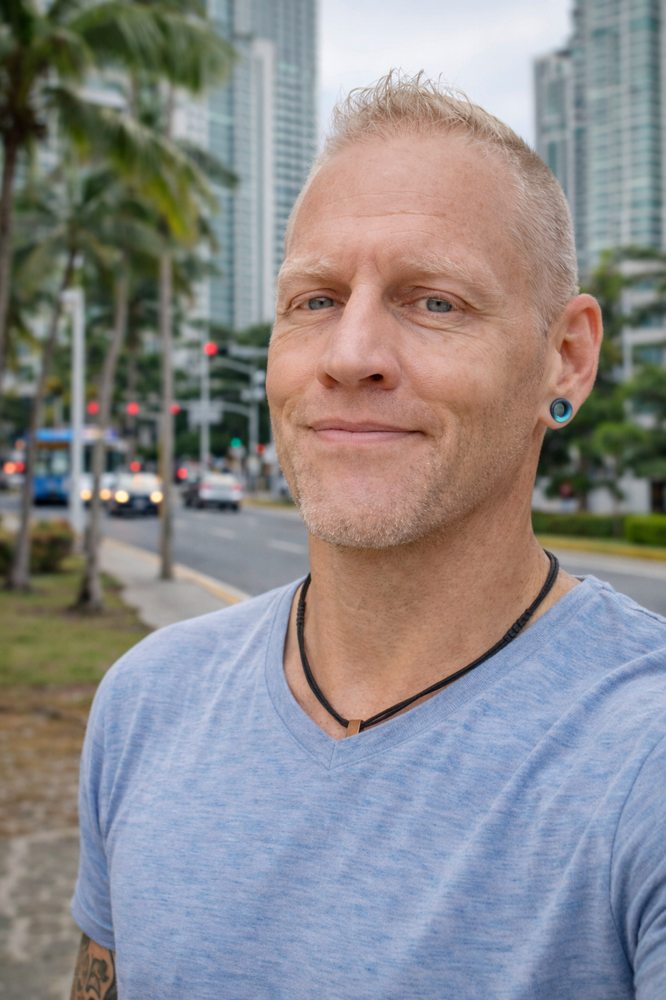

Systems Architecture
Operating structures that clarify roles, ownership, decision paths, and execution rhythm.
I help regenerative founders design coherent operating systems that end burnout, resolve role confusion, and turn execution chaos into shared ownership and sustainable momentum.
Coherence Architecture
Rick works at the intersection of regenerative ideals, functional operations, evolutionary teal governance, human-centered technology, and conscious leadership.
The work is diagnostic before it is promotional. It helps people name the pattern underneath burnout, role confusion, governance drift, execution chaos, and founder overload.

About Rick
Rick Broider’s work comes from the place where vision, collapse, recovery, systems thinking, and human transformation meet. He helps founders and teams name what is actually happening beneath the surface, then build structures strong enough to hold the future they are trying to create.
This is not abstract theory. It is practical architecture for people carrying real missions through pressure, complexity, and transition.
What Rick Actually Does
Operating structures that clarify roles, ownership, decision paths, and execution rhythm.
Distributed intelligence with accountability, maturity, and clear authority.
Practical systems for founders and teams trying to scale without becoming extractive.
Practical AI workflows that protect context, clarify decisions, and reduce operational noise.
StopTheCollapse.com
Most visionary projects do not collapse all at once. They lose coherence slowly through invisible dynamics that feel personal until the pattern is named.
RickBroider.com is the personal brand and ecosystem hub. When the need is specifically diagnostic, the path should move directly to StopTheCollapse.com.
Go to StopTheCollapse.com →Dedicated Diagnostic Platform
Keep the personal brand clean. Route collapse-pattern work directly to the diagnostic system built for that job.
Open diagnostic platform →If this is happening, there is probably a pattern underneath it.
Consciousness without operational integrity collapses. Operations without consciousness become extractive. The future belongs to systems that integrate both.
Entity Hub
RickBroider.com acts as the central identity node connecting consulting, systems, books, media, human-centered technology, governance frameworks, and relational infrastructure.
Strategic launch and growth for mission-driven visionaries.
Diagnose, stabilize, and rebuild coherence before the system breaks.
Find Your Frequency: a signal-discovery gateway for spiritually aware leaders and remembrance work.
Book and media ecosystem housed inside IWasReady.com for identity, memory, and mythic orientation.
Relational infrastructure for aligned people, projects, and communities.
Featured Projects
These projects show the range of Rick’s ecosystem: consulting, diagnostics, human-centered technology, book/media experiences, and operational infrastructure.
Consulting Platform
Strategic launch and growth infrastructure for founders who need clarity, momentum, and operational support without losing the soul of the mission.
Operational SaaS
A field-service operating system concept for contractors who need job visibility, client communication, pipeline clarity, and repeatable delivery.
View live project →Flagship Diagnostic
A collapse-pattern diagnostic and trust architecture for regenerative founders, conscious businesses, and visionary teams trying to stabilize before the system breaks.
View live project →Governance Infrastructure
A registry-style platform for mapping teal organizations, governance signals, operating practices, and the maturity patterns behind distributed leadership.
View live project →Regenerative Business
A practical business systems lab for regenerative entrepreneurs turning values, offers, operations, and delivery into coherent working models.
View live project →Human Needs Tool
A guided needs exploration experience that helps people name what is underneath emotion, conflict, decision fog, and relational friction.
View live project →Signal Gateway
Find Your Frequency: a quiz-led entry point for spiritually aware leaders, remembrance work, and the Bridging Earth & Kanaria media ecosystem.
View live project →Embodied Leadership
A spiritual leadership and remembrance platform for sovereignty, inner authority, and grounded transformation without bypassing practical responsibility.
View live project →Readiness Diagnostic
A mobile-first scorecard and red-flag guide for people evaluating whether a community, circle, or system is ready to hold what it claims.
View live project →
Human-Centered AI
Rick’s technology work is not about novelty or automation for its own sake. It is about building systems that reduce noise, clarify decisions, preserve human context, and help mission-driven people act from alignment.
This is AI as operational support: human-centered, accountable, emotionally intelligent, and grounded in real implementation.
Embodied Story
The brand should not hide the human story behind the systems work. Rick’s authority comes from lived transition: chaos into clarity, fragmentation into coherence, and personal survival into service.
Next Step
Use this as the front door for consulting inquiries, podcast and speaking invitations, ecosystem participation, and strategic collaboration.
The more clearly you name what feels incoherent, the more useful the first response can be.